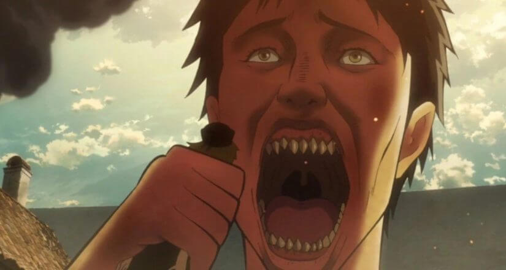
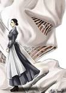

Titans
In the Attack on Titan universe, there are several types and classifications of Titans. Here's a brief explanation of each type:
-
Pure Titans:
These are Titans that were once human, but were transformed into Titans through unknown means. They have no intelligence and simply wander around, eating humans without any apparent reason. Pure Titans come in a variety of sizes, ranging from the small, 3-4 meter Titans to the colossal Titans that are over 60 meters tall.
-
Abnormal Titans:
These are Titans that behave differently from typical Pure Titans. They are more aggressive and unpredictable, and often exhibit abnormal behavior such as running on all fours or exhibiting unusual movements. Abnormal Titans are a major threat to human safety because they are difficult to predict and can quickly change direction or attack unexpectedly.
- 
-
Colossal Titans:
These are Titans that are over 60 meters tall and possess incredible strength and destructive power. They are rare and are usually only seen during major battles or when breaching the walls. Colossal Titans are particularly dangerous because of their immense size and the amount of damage they can inflict.
Intelligent Titans:
In the Attack on Titan universe,there are nine Titans that possess unique powers,These Titans are:
-
Attack Titan:
Possessed by Eren Yeager, the Attack Titan has incredible strength and regenerative abilities. It also allows the user to see glimpses of the future and memories of past Attack Titan users.
-
Armored Titan:
Possessed by Reiner Braun, the Armored Titan has a hardened layer of skin that is nearly impenetrable. It also has incredible strength and endurance.
-
Female Titan:
Possessed by Annie Leonhart, the Female Titan has the ability to harden its skin and create crystal structures. It is also an incredibly skilled fighter and is able to use its agility and speed to dodge attacks.
-
Beast Titan:
Possessed by Zeke Yeager, the Beast Titan has the ability to throw objects with incredible accuracy and force. It can also turn Eldian subjects into Titans by injecting them with spinal fluid
-
Colossal Titan:
Possessed by Bertholdt Hoover then by Armin Arlert A massive Titan that possesses incredible strength and destructive power. It is capable of creating massive explosions and has the ability to release intense heat.
-
Jaw Titan:
Possessed by Porco Galliard, the Jaw Titan has incredibly strong jaws and teeth, making it a formidable close-combat fighter. It also has the ability to regenerate its limbs and body at a faster rate than other Titans.
-
Cart Titan:
Possessed by Pieck Finger, the Cart Titan has incredible endurance and stamina, allowing it to carry heavy loads and travel long distances. It can also transform into a quadrupedal form for increased mobility
-

-
WarHammer Titan:
Possessed by Willy Tybur and later by Eren Yeager, the War Hammer Titan has the ability to create and manipulate structures made of hardened Titan flesh. It also possesses incredible physical strength and endurance
- 
-
Founding Titan:
The most powerful Titan, possessed by Eren Yeager at the end of the series. It has the ability to control all other Titans and manipulate the memories of humans.
-